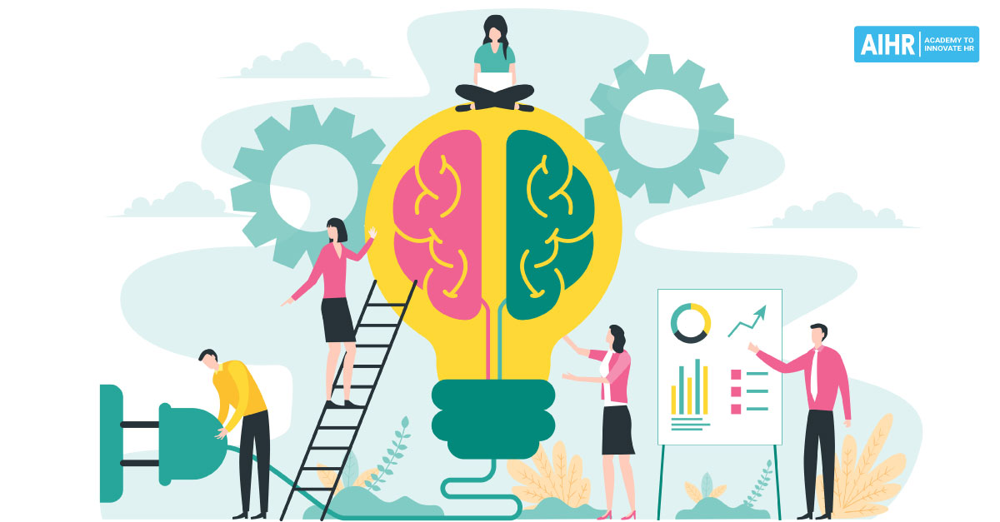

Core Reflection
• What are three new things you have learnt about yourself and your ego as a result of the core learning?
The importance of emotional intelligence & growth mindset. I already kind of knew that you keep learning throughout your lifetime, that your brain still has plasticity, but it was good to be reminded of this. It’s never too late to learn new skills and adapt. It was also good to be reminded of the benefits of mindful meditation.• What are the role of values, empathy, and self awareness in learning and programming?
Having empathy, maintaining effective relationships & managing yourself well in order to perform at your best are essential life skills. You’ll always be working with people in development, whether it’s with customers, work colleagues or owners of the business itself. Knowing how to best collaborate with them and articulate your ideas is crucial.• What has surprised you the most about the core learning?
The importance of Emotional Intelligence. I don’t remember being taught anything about it when going through school. In a way we’re socialized in a classroom but there wasn’t any explicit teaching on the subject. Numeracy and literacy are important but so is emotional intelligence. It's not really taught at university either.• What were the most challenging aspects of the core learning?
Being able to clearly articulate the deeper questions that were asked in some of the activities. Maintaining the practice of mindful meditation.• Why do you think that we, a programming school, are spending so much time focusing on core learning in a web development bootcamp course?
Having a high EQ is just as important as IQ. Individuals are a lot more employable when they work well in team environments and manage themselves effectively. It doesn’t matter how technically brilliant you are, if you can’t get a long with people you won’t get very far.• Does the time you spent studying core learning here feel like a waste of time? Should you have just used that time to practise programming instead? Justify your answer.
I think it was useful and I enjoyed the variety of topics. I liked the core learning more so than the technical learning because I could wrap my head around it a little easier. Some of the technical learning was really challenging. I will be able to try applying the core skills we learned throughout the upcoming bootcamp.
